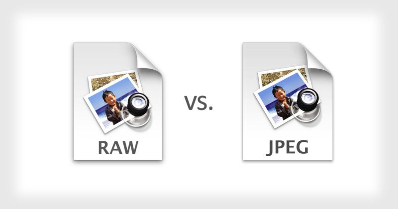

ทฤษฎีการถ่ายภาพ เพราะศิลปะก็มีสาระเหมือนกัน
10 Oct 2019
Author : Arm Suphakit
การถ่ายภาพ หลายๆคนอาจคิดว่า มันคือศิลปะ ไม่ทฤษฎีอะไรมาอิงได้มากนัก ซื่งก็จริงในบางกรณี แต่หลายๆครั้ง ภาพหนึ่งภาพที่ดูสวยงาม จริงๆแล้วอาจจะเข้ากับกฎบางกฎ ทฤษฎีบางทฤษฎี เป็นการประกอบรวมกันระหว่างศาสตร์และศิลป์ที่ลงตัง ทำให้ภาพมีเรื่องราว มีองค์ประกอบที่เหมาะสม และได้ภาพที่สวยงามออกมา เพราะฉะนั้นเราจะมารู้จักกับทฤษฎีต่างๆที่ทำให้ภาพของเรามีงดงามและมีคุณค่ามากขึ้นกัน
กฏสามส่วน
โดยปกติการถ่ายอะไรที่อยู่ตรงกลาง หากสิ่งที่จะถ่ายไม่น่าสนใจพอ ทำให้ภาพตาย หรือเรียกว่า Dead Center เลยมีหลายเทคนิค แต่มีกฏพื้นฐานที่หลายคนชอบใช้ คือกฏสามส่วน สำหรับทฤษฎีนี้ เราต้องแบ่งภาพออกเป็นตารางเก้าช่องที่มีขนาดเท่า ๆ กัน โดยแบ่งด้วยเส้นแนวนอนและเส้นแนวตั้ง เส้นเหล่านี้จะตัดกันสี่ครั้ง และบนจุดตัดเหล่านี้นี่เองที่เราจะจัดวางตัวแบบลงไป ซึ่งเมื่อทำแบบนี้ คุณจะสามารถดึงสายตาของผู้ชมภาพมายังจุดตัดจุดใดจุดหนึ่งได้อย่างเป็นธรรมชาติที่สุด
ตรงกลางภาพ และ สมมาตร
มีบางครั้งที่วางจุดสนใจไว้กลางภาพแล้วออกมาได้ผลดี สมมาตรเป็นตัวอย่างที่ดี ในการวางจุดสนใจไว้กลางภาพ

เส้นนำสายตา
เส้นนำสายตาเป็นเส้นที่ดึงสายตาเราไปยัง Subject หรือสิ่งที่น่าสนใจในภาพ มีหลายอย่างที่สามารถนำเป็นเส้นนำสายตาได้ กำแพง

เส้นทะแยงและสามเหลี่ยม
บางคนคงได้ยินมาแล้วว่าสามเหลี่ยมและเส้นทะแยงช่วยเพิ่ม “dynamic tension” ให้ภาพ
แล้วมันคืออะไร? สมมติว่าคุณเอาผู้ชายคนนึงไปวางบนเส้นแนวนอน เขาจะดูมั่นคง
แม้ว่าเขาจะเพิ่งออกมาจากผับก็ตาม แต่หากไปวางบนเส้นเอียงเขาจะดูมั่นคงน้อยลง
มันเป็นการสร้างความตึงเครียดทางสายตา และอาจรู้สึกว่ามีความเคลื่อนไหว
การรวมกันของเส้นทะแยง และสามเหลี่ยมจะช่วยสร้างความรู้สึกที่เรียกว่า “dynamic tension”
สามเหลี่ยมที่ว่าอาจเป็นรูปร่างสามเหลี่ยมจริงๆ หรือสามเหลี่ยมโดยนัยก็ได้
กฏเลขคี่
ในโลกของการถ่ายภาพ มีความเชื่อที่ว่า Subject ที่เป็นเลขคี่นั้น ดึงดูดความสนใจได้มากกว่า การใช้เลขคู่นั้นมันจะดึงดูดความสนใจของกันและกัน และไม่รู้จะโฟกัสอันไหนดี เลขคี่จะเป็นธรรมชาติและดูสบายตากว่า
การใช้สี
การใช้สีเป็นเครื่องมือที่หลายคนมองข้าม ทฤษฎีสี นอกจากกราฟฟิกดีไซเนอร์ แฟชั่นดีไซเนอร์ และ นักออกแบบภายใน แล้วช่างภาพก็จำเป็นต้องรู้ หากเข้าใจเรื่องสีและการให้อารมณ์ของแต่ละสี คุณจะทำให้ภาพดูน่าสนใจขึ้น
1. ใช้สีๆเดียวทั้งภาพ (Monochromatic)
2. Analogous หรือสีที่อยู่ติดกันของวงล้อสี
3. Triadic หรือสี ที่มีระยะห่างเท่าๆกันบนวงล้อ เลือกมาสามสี
4. Complimentary (คู่สีตรงข้าม)
5. Split Complimentary คล้ายกับ complimentary แต่อีกฝั่งจะแตกออกไปด้านข้างดังภาพ
6. Double Complimentary คล้ายกับ split complimentary
แต่จะแตกออกไปด้านข้างทั้งสองฝ่ายเป็นคู่ อาจอยู่ตำหน่งอื่นของภาพก็ได้ ไม่จำเป็นต้องสีตามรูป
กฏของที่ว่างและทิศทาง
ที่ว่างจะสัมพันธ์กับทิศทางการเคลื่อนไหวของ Subject สมมติคุณถ่ายรูปรถที่กำลังเคลื่อนที่จากซ้ายไปขวา ก็ควรเว้นที่ว่างด้านขวาไว้ เพราะคนดูจะรู้สึกว่ามีที่ว่างให้รถไปได้ จะไม่อึดอัด และเป็นการใช้ที่ว่างให้มีประโยชน์
ในภาพนี้เรือแล่นจากซ้ายไปขวา จึงเว้นที่ว่างด้านขวาไว้ ทำให้เราจินตนาการได้ว่าเรือจะไปทางนั้น มีทฤษฎีการอ่าน ที่ว่าเราอ่านจากซ้ายไปขวา เมื่อดูภาพเราก็จะดูจากซ้ายไปขวาเช่นกัน ด้วยทิศทางการดูภาพแบบนี้ถ้าให้ subject ในภาพ เคลื่อนที่ทิศทางเดียวกับการดูภาพ หรือใช้เส้นนำสายตานำจากซ้ายมายัง Subject ที่น่าสนใจทางขวา ก็ทำให้ภาพดูน่าสนใจได้
มีทฤษฎีการอ่าน ที่ว่าเราอ่านจากซ้ายไปขวา เมื่อดูภาพเราก็จะดูจากซ้ายไปขวาเช่นกัน ด้วยทิศทางการดูภาพแบบนี้ถ้าให้ subject ในภาพ เคลื่อนที่ทิศทางเดียวกับการดูภาพ หรือใช้เส้นนำสายตานำจากซ้ายมายัง Subject ที่น่าสนใจทางขวา ก็ทำให้ภาพดูน่าสนใจได้
สมดุล
จาก guideline ข้อแรก “กฏสามส่วน” นั้น หากเราวางตรงเส้นแนวตั้ง หากเราพิจารณาไม่ดี จะทำให้ขาดสมดุลได้ เพื่อจัดการเรื่องนี้ คุณอาจต้องหา Subject รองมาช่วยรักษาสมดุล นี่อาจขัดกับข้อ 10 ว่าด้วยเรื่องที่ว่าง และ เลขคี่ แต่อย่างที่รู้ว่าไม่มีกฏไหนที่แหกไม่ได้ หากมันออกมาสวยก็โอเค แนวทางบางอย่างอาจดีกับบางสถานการณ์แต่ใช้ไม่ได้กับสถานการณ์อื่น
สามเหลี่ยมทองคำ
คล้ายๆกฏสามส่วน แต่แทนที่จะแบ่งด้วย 4 เหลี่ยม กลับแบ่งด้วยเส้นทะแยงมุม
ลากเส้นทะแยงมุมใหญ่เส้นนึง และเส้นเล็กมาตั้งฉากกับเส้นใหญ่ อย่างที่เห็นมันช่วยเพิ่ม dynamic tension
ภาพด้านบนเป็นไปตามกฏสามเหลี่ยมทองคำ เส้นแสงไฟ วิ่งไปตามเส้นทะแยงมุม จากขวาบนไปซ้ายล่าง
ด้านมุมบนซ้ายของตัวอาคารจะมีเส้นเล็กๆเกือบเองมาตามเส้นด้านซ้าย
สัดส่วนทองคำ
สัดส่วนทองคำเป็นสัดส่วนที่งดงามที่สุดในธรรมชาติมาจาก ลีโอนาโด ฟีโบนัชชี
นักคณิตชาวอิตาลี พยายามใช้ตัวเลขมาอธิบายความงามของธรรมชาติ
ในบทความนี้จะไม่พิสูจน์สูตรให้วุ่นวายนะครับ แต่จะจำว่าอัตราส่วนเป็น 1 : 1.618 ก็ได้
ฟังดูยากแต่จริงๆมันง่ายพอๆกับกฏสามส่วน แต่แทนที่จะเป็นเส้นสี่เหลี่ยม จะเป็นเส้น ฟี (Phi Grid) แทน
โดยการลากเส้นคล้ายก้นหอย ที่เรียกว่า Fibonacci Spiral หรือ Golden Spiral
คือให้วัตถุอยู่ในเส้นฟี นี้ จะทำให้วัตถุเหล่านั้นดูสัมพันธ์กัน (แต่จริงๆ เกิดจากความสัมพันธ์ของ
Fibonacci Spiral) และทำให้ภาพดูน่าสนใจได้